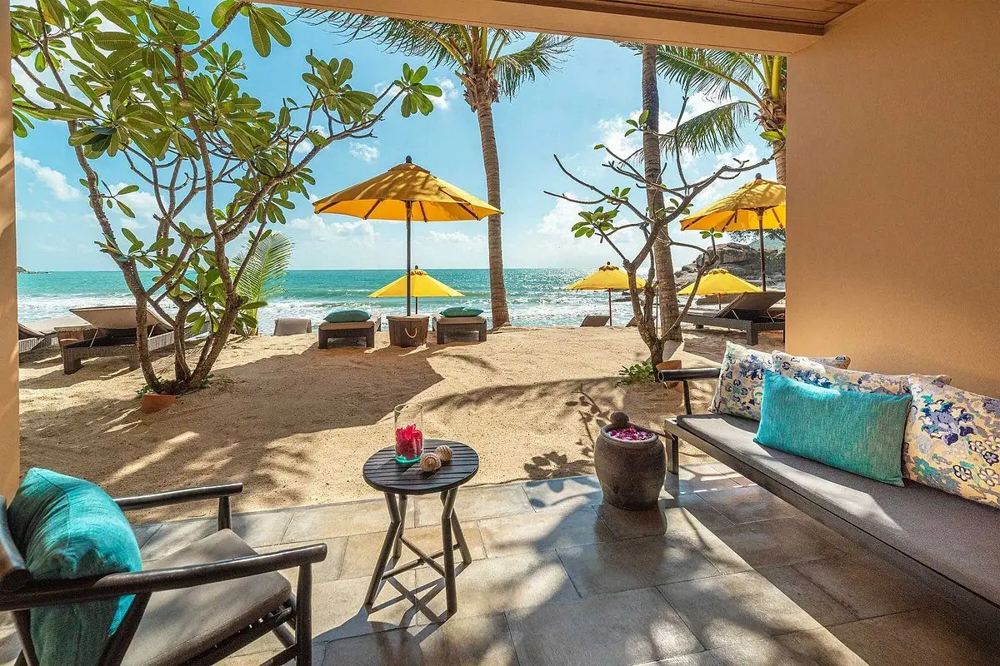
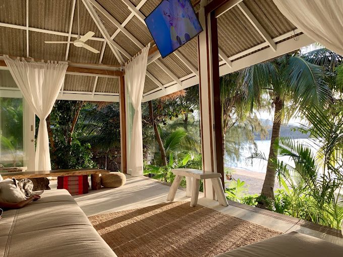

Where to Stay in Koh Phangan (2026): Best Areas, Hotels, Resorts & Villas
Where to stay in Koh Phangan: the best areas, hotels, resorts and villas — from Sri Thanu wellness to Hin Kong sunsets, Thong Nai Pan luxury and Haad Rin nightlife.
Editorial review by Bruno Potier
Most guides tell you which hotel to book. We'd start one step earlier: on Koh Phangan, choosing the right area matters more than choosing the right hotel. The island is small but surprisingly varied — a wellness village, a sunset coast, a luxury bay, a party beach and quiet fishing villages are all within a short scooter ride, and each gives you a completely different trip.
In brief: stay in Sri Thanu for wellness, Hin Kong for sunsets and food, Thong Nai Pan for quiet luxury, Haad Rin / Baan Tai for nightlife, Haad Yao / Haad Salad for the beach, and the north for nature and seclusion. Below, how to choose your area — then the best-rated hotels, resorts and villas in each, with where to eat nearby.
Editor's Choice
Our standout picks across the island, from the best-reviewed and best-located stays:
- 🥇 Best overall — Buri Rasa Village Phangan (Thong Nai Pan)
- 🥈 Best value — All At Sea Beach Resort (Baan Kai) · BOHO Boutique Bungalows (Baan Tai)
- 🥉 Best luxury resort — Santhiya · Anantara Rasananda (Thong Nai Pan) · Kupu Kupu (Nai Wok)
- Best luxury villa — Villa La Favela (Haad Salad) · Bliss Villas (Sri Thanu)
- Best for couples / adults-only — Mångata · Kupu Kupu
- Best beach villas — Joy Beach Villas (Hin Kong)
- Editor's find (eco & secluded) — Coconut Beach Bungalows (Haad Khom)
- Best social / beach club — Tiki Beach (Baan Tai)
- Best for food lovers — anywhere in Hin Kong or Sri Thanu
Choose Your Area First
| Area | Atmosphere | Best for |
|---|---|---|
| Sri Thanu | Wellness & cafés | Wellness & food |
| Hin Kong / Nai Wok | Sunset coast | Food lovers |
| Thong Sala / Baan Tai | Island hub | Convenience & Full Moon |
| Thong Nai Pan | Quiet luxury | Couples & relaxation |
| Haad Rin | Party beach | Nightlife |
| Haad Yao / Haad Salad | Beach holiday | Beaches & sunsets |
| Chaloklum & the north | Sleepy & wild | Nature & seclusion |
Quick Picks
| Looking for… | Our pick |
|---|---|
| Best luxury resort | Santhiya · Anantara Rasananda · Buri Rasa |
| Best boutique resort | Kupu Kupu · Mångata |
| Best private villa | Villa La Favela · Bliss Villas |
| Best beach villas | Joy Beach Villas |
| Best adults-only | Mångata · Explorar Koh Phangan |
| Best value / budget | All At Sea · BOHO Boutique Bungalows |
| Best eco / secluded | Coconut Beach Bungalows |
| Best social / beach club | Tiki Beach |
| Best for food lovers | Stay in Hin Kong or Sri Thanu |
The Best-Rated Stays at a Glance
Guest ratings across two sources (Agoda and Google, at the time of writing — treat them as a guide rather than a fixed score).
| Hotel / Villa | Area | Type | Price | Agoda | |
|---|---|---|---|---|---|
| Mångata | Hin Kong | Adults-only bungalows | ฿฿ | 9.8 | 4.9 |
| Bliss Villas | Sri Thanu | Luxury pool villas | ฿฿฿ | 9.5 | 4.8 |
| Coconut Beach Bungalows | Haad Khom | Eco beach bungalows | ฿฿ | 9.5 | 4.6 |
| All At Sea Beach Resort | Baan Kai | Budget beach resort | ฿ | 9.4 | 4.8 |
| Anantara Rasananda | Thong Nai Pan | Luxury beachfront resort | ฿฿฿฿ | 9.3 | 4.7 |
| BOHO Boutique Bungalows | Baan Tai | Boutique bungalows | ฿ | 9.3 | 4.9 |
| Boonya Swiss Home | Chaloklum | Boutique holiday homes | ฿฿ | 9.3 | 4.8 |
| Joy Beach Villas | Hin Kong | Beach villas | ฿฿ | 9.2 | 4.9 |
| Buri Rasa Village Phangan | Thong Nai Pan | Luxury boutique resort | ฿฿฿ | 9.2 | 4.8 |
| Benjamin's Hut | Sri Thanu | Beach bungalows | ฿฿ | 9.0 | 4.7 |
| Explorar Koh Phangan (Adults-Only) | Haad Rin | Adults-only resort | ฿฿฿ | 8.9 | 4.8 |
| Kupu Kupu Phangan Beach Villas & Spa | Nai Wok | Luxury boutique resort | ฿฿฿ | 8.9 | 4.8 |
| Sunset Hill Boutique Resort | Haad Yao | Boutique resort | ฿฿ | 8.9 | 4.6 |
| Santhiya Koh Phangan Resort & Spa | Thong Nai Pan | Luxury resort | ฿฿฿ | 8.7 | 4.4 |
| Bay Villas Koh Phangan | Haad Salad | Luxury private villas | ฿฿฿ | 8.4 | 4.4 |
| Tiki Beach Koh Phangan | Baan Tai | Beach resort & club | ฿ | 8.4 | 4.4 |
Villa La Favela, a private villa let through Airbnb rather than the hotel platforms, sits outside the table above — it rates 4.9 on Airbnb and 5.0 on Google.
Where to Stay, Area by Area
Sri Thanu — Wellness & Food
Koh Phangan's wellness village, and one of its best areas for cafés, healthy cuisine and international restaurants — an easy, relaxed base on the west coast, close to the island's best sunset beaches and to Dar Mansour.
Benjamin's Hut
Wellness Retreat · Great Value
A relaxed beachfront property offering charming bungalows surrounded by tropical gardens, with direct access to one of Sri Thanu's peaceful beaches. Guests appreciate the warm family atmosphere, excellent value, swimming pool and convenient location close to Zen Beach, cafés and wellness studios.
Best for — Wellness travellers · Digital nomads · Couples wanting a relaxed beachfront stay
Price — ฿฿
Guest ratings — Agoda 9.0 · Google 4.7
Location — Sri Thanu (Zen Beach). View on map ↗
Bliss Villas
Romantic Escape · Best Beachfront · Great for Families
A collection of three exclusive architect-designed beachfront villas combining contemporary design with tropical island living. Set on a secluded stretch of beach, each villa offers a private pool, elegant interiors and direct access to crystal-clear waters and spectacular west-coast sunsets.
Best for — Families · Groups · Luxury travellers seeking complete privacy
Price — ฿฿฿
Guest ratings — Agoda 9.5 · Google 4.8
Location — Sri Thanu Beach. View on map ↗
Nearby restaurants → see our Sri Thanu food guide. A short ride away, Dar Mansour serves slow-cooked Moroccan dinners.
If this were our trip — we'd pick Sri Thanu for a slower, wellness-led stay: mornings in a café or a yoga studio, sunsets at Zen Beach, and easy dinners without needing to travel far. It's our top choice for a first, relaxed visit that still keeps you close to the best food.
Hin Kong & Nai Wok — Sunsets & the Best Food
Our own stretch of the west coast: relaxed, scenic and home to some of the island's best sunset restaurants.
Kupu Kupu Phangan Beach Villas & Spa by L'Occitane
Best Sunset Views · Romantic Escape · Wellness Retreat
An elegant five-star beachfront resort blending traditional Thai architecture with subtle Balinese influences. Private pool villas, spectacular sunset views, the renowned L'Occitane Spa and direct beach access create one of Koh Phangan's most exclusive luxury experiences.
Best for — Honeymooners · Couples · Travellers wanting luxury, privacy and sunsets
Price — ฿฿฿
Guest ratings — Agoda 8.9 · Google 4.8
Location — Nai Wok, between Thong Sala and Hin Kong. View on map ↗
Our take — the most polished luxury option on the west coast, and the one we'd book for a honeymoon: sunset-facing pool villas, the L'Occitane spa and a location that keeps you close to the island's best food.
Joy Beach Villas
Best for Families · Beachfront
A collection of just thirteen stylish beachfront villas on the peaceful west coast between Hin Kong and Sri Thanu. Featuring tropical gardens, swimming pools and fully equipped villas, it's within walking distance of many of the island's best restaurants, cafés and wellness centres.
Best for — Families · Longer stays · Travellers wanting a private villa close to great dining
Price — ฿฿
Guest ratings — Agoda 9.2 · Google 4.9
Location — Hin Kong / Sri Thanu coast. View on map ↗
Mångata Boutique Bungalows (Adults-Only)
Romantic Escape · Adults-Only
An intimate adults-only beachfront retreat designed around privacy, simplicity and barefoot luxury. Each boutique bungalow opens onto lush tropical gardens, with the beach and swimming pool just steps away, creating a peaceful atmosphere perfect for relaxing.
Best for — Couples seeking a quiet, romantic adults-only escape
Price — ฿฿
Guest ratings — Agoda 9.8 · Google 4.9
Location — Hin Kong coast. View on map ↗
Our take — the highest-rated stay on the whole island, and our top adults-only pick for couples: small, barefoot-luxury and genuinely peaceful. If a quiet romantic escape is the goal, start here.
Local dining → see our Hin Kong food guide, our best sunset spots, and Dar Mansour for a Moroccan dinner between Hin Kong and Sri Thanu.
If this were our trip — this is where we'd stay. Hin Kong and Nai Wok give you the island's best sunsets and, to our taste, its best run of restaurants, without the crowds of the party beaches. It's the base we'd recommend to almost anyone visiting for the first time.
Thong Sala & Baan Tai — Convenience & Nightlife
Thong Sala is the island's main town and ferry port — the widest choice of restaurants and the most central base. Neighbouring Baan Tai adds beachfront stays and easy access to the Full Moon Party.
BOHO Boutique Bungalows
Great for Digital Nomads · Great Value
A small boutique property with just nine stylish bungalows, combining contemporary design with a peaceful tropical setting. Set slightly back from the main road, it's quiet yet within easy reach of Baan Tai Beach, restaurants and Thong Sala. Guests consistently praise the warm hospitality, immaculate rooms and attention to detail that make longer stays feel like home.
Best for — Couples · Digital nomads · Stylish, affordable stays near Thong Sala
Price — ฿
Guest ratings — Agoda 9.3 · Google 4.9
Location — Baan Tai. View on map ↗
All At Sea Beach Resort
Great Value · Best Beachfront
A small beachfront resort offering excellent value in a peaceful setting, directly on the quiet sands of Baan Kai Beach. Comfortable modern rooms, direct beach access and attentive service create a relaxed atmosphere just a short drive from Thong Sala and Baan Tai's restaurants and nightlife.
Best for — Budget-conscious travellers · Couples · A quiet beachfront stay with comfort
Price — ฿
Guest ratings — Agoda 9.4 · Google 4.8
Location — Baan Kai (Baan Tai), near Thong Sala. View on map ↗
Tiki Beach Koh Phangan
Great for Digital Nomads · Social Stay · Best Sunsets
Directly on Baan Tai Beach, this relaxed beachfront resort and beach club combines private rooms, garden bungalows and dormitories with a lively social atmosphere. An outdoor pool, co-working spaces, beachfront dining, regular live music, DJs, fire shows and social events make it one of the island's most popular places to meet fellow travellers — with spectacular sunsets thrown in.
Best for — Solo travellers · Digital nomads · Groups of friends · A social beachfront stay
Price — ฿
Guest ratings — Agoda 8.4 · Google 4.4
Location — Baan Tai Beach. View on map ↗
Where to eat nearby → browse our Thong Sala food guide.
If this were our trip — we'd choose this area for convenience over scenery: it's the most central base, with the widest choice of restaurants and shops on your doorstep and quick access to the Full Moon Party from Baan Tai. Handy for a short stay or a first night off the ferry.
Thong Nai Pan — Quiet Luxury
A pair of sheltered bays on the east coast, and the island's home of quiet, upscale resorts — beautiful beaches, calmer water and some of Koh Phangan's highest-rated stays.
Buri Rasa Village Phangan
Romantic Escape · Best Beachfront
A charming boutique beachfront resort on the sands of Thong Nai Pan Noi, combining traditional Thai architecture with contemporary comfort. Spacious suites, personalised service and a relaxed atmosphere make it one of the island's most refined boutique stays, with an excellent beachfront restaurant and swimming pool.
Best for — Couples · Honeymooners · An intimate luxury beachfront escape
Price — ฿฿฿
Guest ratings — Agoda 9.2 · Google 4.8
Location — Thong Nai Pan Noi. View on map ↗
Our take — our pick for best overall stay on the island: it's boutique rather than big-resort, the service earns its reputation, and the beach out front is one of Koh Phangan's prettiest.
Anantara Rasananda Koh Phangan Villas
Romantic Escape · Best Beachfront
Set directly on the white sands of Thong Nai Pan Noi, this elegant beachfront resort combines spacious suites and private pool villas with outstanding service, a luxury spa and refined dining. Surrounded by lush tropical gardens, it offers one of the island's most exclusive beachfront experiences.
Best for — Honeymoons · Couples · Luxury beachfront holidays
Price — ฿฿฿฿
Guest ratings — Agoda 9.3 · Google 4.7
Location — Thong Nai Pan Noi. View on map ↗
Santhiya Koh Phangan Resort & Spa
Wellness Retreat · Romantic Escape
One of Koh Phangan's most recognisable luxury resorts, built almost entirely from beautifully carved teak wood and overlooking Thong Nai Pan Noi Bay. It features elegant villas and suites, several swimming pools, a private beach, an award-winning spa and panoramic views across the Gulf of Thailand.
Best for — Luxury travellers · Couples · A unique traditional Thai resort experience
Price — ฿฿฿
Guest ratings — Agoda 8.7 · Google 4.4
Location — Thong Nai Pan Noi. View on map ↗
Our take — the island's most dramatic resort, carved almost entirely from teak and terraced up the hillside. Book it for the sheer spectacle and the spa; just be ready for a lot of steps between your villa and the beach.
Dining nearby → the east coast is quieter for dining; see our island-wide best restaurants guide (Yukinoya at Anantara Rasananda is here).
If this were our trip — we'd come here to switch off completely. Thong Nai Pan is the pick for a calm, upscale beach holiday — you settle into one beautiful bay and barely move — but it's a longer ride from the west-coast restaurants, so it suits relaxation over exploring.
Haad Rin — Nightlife & the Full Moon Party
The island's party capital and home of the Full Moon Party, on the southern tip — busiest and liveliest, and best if nightlife is your priority.
Explorar Koh Phangan – Adults-Only Resort & Spa
Adults-Only · Romantic Escape
A contemporary adults-only beachfront resort offering stylish rooms, premium suites and private pool villas just outside the centre of Haad Rin. Guests enjoy direct beach access, a large swimming pool with swim-up bar, modern fitness facilities and a relaxed atmosphere that balances luxury with easy access to the island's famous nightlife.
Best for — Couples · Honeymooners · Adults wanting a stylish beachfront resort near the Full Moon Party
Price — ฿฿฿
Guest ratings — Agoda 8.9 · Google 4.8
Location — Haad Rin. View on map ↗
House of Sanskara
Best Value · Creative Stay
On the quieter end of Haad Rin Beach, House of Sanskara combines relaxed beachfront accommodation with a creative community atmosphere. Alongside comfortable bungalows and a popular restaurant, the property hosts film screenings, cultural events and wellness-inspired experiences — a very different vibe from the Full Moon crowds a short walk away.
Best for — Creative travellers · Couples · A quieter beachfront corner of Haad Rin
Price — ฿
Guest ratings — Google 4.7
Location — Haad Rin (quiet end). View on map ↗
Nearby tables → see our island-wide best restaurants guide (Vertigo and El Barrio are in Haad Rin).
If this were our trip — we'd only base ourselves here if the Full Moon Party were the point of the trip. It's the liveliest, busiest corner of the island; for a quieter stay we'd choose the calm end of Haad Rin beach and keep it to a night or two, then move west.
Haad Yao & Haad Salad — Beaches & Sunsets
Two of the west coast's best swimming and snorkelling beaches, with a relaxed, beach-holiday feel.
Sunset Hill Boutique Resort
Best Sunset Views · Great for Digital Nomads
Perched on a hillside overlooking the Gulf of Thailand, Sunset Hill offers panoramic sea views in a peaceful tropical setting, a short walk from Haad Chao Phao Beach. Studios, suites and spacious apartments, plus an infinity pool, rooftop penthouses, yoga classes and a panoramic restaurant, make it a favourite for longer stays.
Best for — Couples · Digital nomads · Peaceful stays with sunset views
Price — ฿฿
Guest ratings — Agoda 8.9 · Google 4.6
Location — Haad Yao / Haad Chao Phao. View on map ↗
Villa La Favela
Wellness Retreat · Best for Groups · Sunset Lovers
Perched above Haad Salad Bay, this exclusive four-bedroom retreat blends bold Brazilian-inspired architecture with Japanese minimalist design. Panoramic sea views, a 60 m² infinity pool, two fully equipped kitchens, an indoor gym and dedicated yoga and meditation spaces create an exceptional setting for a private island escape.
Best for — Groups · Families · Wellness retreats · Remote work · Sunset lovers
Price — ฿฿฿
Guest ratings — Airbnb 4.9 · Google 5.0
Location — Haad Salad Bay. View on map ↗
Our take — our favourite villa for a group or a special occasion: striking architecture, a huge infinity pool and total privacy above the bay. Rent it when you want the island to feel like it's yours alone.
Bay Villas Koh Phangan
Best for Families · Sea Views
Set high above Haad Salad Bay, Bay Villas is a collection of contemporary luxury villas with sweeping views over the Gulf of Thailand. Each villa has a private pool, spacious living areas and modern facilities, suiting family holidays, remote working or a luxury island escape.
Best for — Families · Groups · Digital nomads · Spacious private villas with sea views
Price — ฿฿฿
Guest ratings — Agoda 8.4 · Google 4.4
Location — Haad Salad hills. View on map ↗
Our restaurant guide → see our island-wide best restaurants guide.
If this were our trip — we'd come to Haad Yao and Haad Salad for the swimming. These are among the best beaches for actually getting in the water, and the hillside villas give you sunsets with real privacy — ideal for a beach-focused week with a few dinners out on the west coast.
Chaloklum & the North — Nature & Seclusion
Northern Koh Phangan trades nightlife for calm — fishing villages, snorkelling bays and eco stays.
Boonya Swiss Home
Best for Families · Quiet Stay
In the peaceful fishing village of Chaloklum, Boonya Swiss Home offers modern one, two and three-bedroom holiday homes surrounded by lush tropical gardens. Fully equipped kitchens, private terraces, a swimming pool and a welcoming bistro create a relaxed home-away-from-home atmosphere, a short walk from the beach.
Best for — Families · Longer stays · A peaceful base in the north
Price — ฿฿
Guest ratings — Agoda 9.3 · Google 4.8
Location — Chaloklum. View on map ↗
Coconut Beach Bungalows
Eco Choice · Great for Snorkelling · Off the Beaten Path

On the secluded shores of Haad Khom, Coconut Beach Bungalows is an eco-friendly beachfront retreat powered entirely by solar energy. Modern open-design bungalows, an organic farm, a beachfront restaurant, a massage pavilion and direct access to one of the island's best snorkelling spots make a peaceful escape far from the party scene. The property keeps a quiet atmosphere by limiting children and large groups.
Best for — Couples · Snorkelling enthusiasts · Eco-conscious travellers wanting seclusion
Price — ฿฿
Guest ratings — Agoda 9.5 · Google 4.6
Location — Haad Khom (north coast). View on map ↗
Our take — our editor's find for anyone who wants to disappear for a few days: solar-powered, right on a quiet snorkelling beach, and deliberately kept calm. Not for party-goers — which is exactly the point.
Dining nearby → see our island-wide best restaurants guide (Chaloklum has Mojo's and a lively Sunday market).
If this were our trip — we'd save the north for a second visit, or for travellers who want nature and snorkelling above all else. It's the most secluded, most peaceful part of the island — wonderful if that's exactly what you're after, quiet if it isn't.
Best Hotels in Koh Phangan by Travel Style
- Luxury resorts — Santhiya · Anantara Rasananda · Buri Rasa Village (Thong Nai Pan) · Kupu Kupu (Nai Wok)
- Boutique stays — Kupu Kupu · Mångata · BOHO Boutique Bungalows · Sunset Hill
- Luxury villas — Villa La Favela · Bay Villas (Haad Salad) · Bliss Villas (Sri Thanu) · Joy Beach Villas (Hin Kong)
- Adults-only — Mångata (Hin Kong) · Explorar (Haad Rin)
- Eco & nature — Coconut Beach Bungalows (Haad Khom)
- Social & beach club — Tiki Beach (Baan Tai)
- Budget & value — All At Sea · BOHO · Benjamin's Hut
Where to Stay in Koh Phangan for Food Lovers
If discovering Koh Phangan through its restaurants is part of your trip, base yourself on the west coast, where the best dining is concentrated:
- Hin Kong — sunset restaurants and beachfront tables → best restaurants in Hin Kong
- Sri Thanu — cafés, healthy cuisine and international kitchens → best restaurants in Sri Thanu
- Thong Sala — the island's widest choice, from street food to a chef's table → where to eat in Thong Sala
And wherever you stay, our own Dar Mansour – Morocco's Kitchen sits between Hin Kong and Sri Thanu for a slow Moroccan dinner.
Best Hotels for Couples in Koh Phangan
The west coast (Hin Kong, Sri Thanu) pairs sunsets with the island's most romantic tables, while adults-only stays like Mångata and private villas such as Villa La Favela and Bliss Villas offer quiet and privacy. Plan the evening with our romantic dinner in Koh Phangan guide.
Where to Eat Near Your Hotel
Wherever you land, there's a guide for it:
- Staying in Sri Thanu? → Best restaurants in Sri Thanu
- Staying in Hin Kong? → Best restaurants in Hin Kong
- Staying near Thong Sala / Baan Tai? → Where to eat in Thong Sala
- Anywhere on the island → Best restaurants in Koh Phangan · Where to watch the sunset
When to Go, and West vs East Coast
Two questions shape where you'll want to stay: when you're coming, and which coast suits you.
When to go. The driest, sunniest stretch runs roughly from January to April. October and November are the wettest months, when short heavy downpours are common. December to March is high season — the island is busiest and the best-rated places charge more and book out earlier, especially around each monthly Full Moon Party. If you want quieter beaches and better rates, the shoulder months either side of high season are a good compromise.
West coast vs east coast. The two sides of the island feel different:
- West coast (Sri Thanu, Hin Kong, Haad Yao, Haad Salad) — this is where the sunsets are, along with the best concentration of restaurants, cafés and wellness. It's livelier and more social, and the easiest side for a first trip. The trade-off: at low tide some west-coast beaches get shallow and rocky for swimming.
- East coast (Thong Nai Pan) — quieter, more upscale and better for calm, clear swimming, with the island's most sheltered bays. The trade-off: it's a longer ride from the west-coast dining scene, so it suits a settle-in-one-place holiday more than an exploring one.
If we had to generalise: choose west for food, sunsets and variety; choose east for calm, swimming and quiet luxury.
Practical Tips for Choosing Accommodation in Koh Phangan
- Pick the area, then the hotel. Decide what kind of trip you want — wellness, sunsets, luxury, nightlife or the beach — and choose the area first.
- Book ahead in high season. December to March and every Full Moon Party fill the best-rated places quickly.
- Rent a scooter. The island is small; a scooter turns "far" into ten minutes and opens up every beach and restaurant.
- Check current ratings and hours. Guest scores and opening times shift through the year — confirm on Google or Agoda before booking.
Final Thoughts
Koh Phangan rewards travellers who choose their base with intention. Whether you want to wake up to yoga in Sri Thanu, watch the sun set over Hin Kong, retreat to a quiet Thong Nai Pan bay or dance through a Full Moon in Haad Rin, there's an area — and a place to stay — that fits. And wherever you end up, you're never far from a memorable meal.
Planning Your Trip to Koh Phangan?
Explore our other Koh Phangan guides:
Frequently asked questions
What is the best area to stay in Koh Phangan?
It depends on your trip. Sri Thanu suits wellness and cafés; Hin Kong is best for sunsets and food; Thong Nai Pan for quiet luxury; Haad Rin and Baan Tai for nightlife and the Full Moon Party; Haad Yao and Haad Salad for beach days; Chaloklum and the north for nature and seclusion.
Which is the best area for first-time visitors?
For a first trip, the west coast (Hin Kong to Sri Thanu) is the easiest all-round base — sunsets, the best food, cafés and wellness, and a short scooter ride to everything else. It gives you variety without committing to one single vibe.
Where should food lovers stay in Koh Phangan?
Hin Kong and Sri Thanu, on the west coast, put you closest to the island's best dining — see our guides to the best restaurants in Hin Kong and Sri Thanu, and where to eat in Thong Sala.
What is the best area for couples?
For a romantic stay, the west coast (Hin Kong, Sri Thanu) offers sunset dinners, while adults-only stays like Mångata and private villas such as Villa La Favela and Bliss Villas offer quiet and space. Pair it with our romantic dinner guide.
Where should families stay in Koh Phangan?
Families do well in a private villa with a pool and kitchen — Joy Beach Villas or Bliss Villas on the west coast, Bay Villas at Haad Salad, or Boonya Swiss Home in the quiet north. Thong Nai Pan's calm, gently sloping beaches also suit young children.
Where should I stay for the Full Moon Party?
Haad Rin is the home of the Full Moon Party, with Baan Tai a slightly calmer nearby base. Both put you within reach of the beach and nightlife.
Where is best for a quiet, peaceful stay?
For seclusion, head north to Chaloklum and Haad Khom (Coconut Beach Bungalows) or east to Thong Nai Pan. All three trade nightlife for calm beaches, nature and quiet — well away from the party areas.
Which are the best luxury stays in Koh Phangan?
Among the island's top-rated luxury stays are Santhiya, Buri Rasa Village and Anantara Rasananda in Thong Nai Pan, Kupu Kupu Phangan Beach Villas & Spa near Hin Kong, and private villas such as Villa La Favela and Bliss Villas.
What are the best budget stays in Koh Phangan?
For value, look at All At Sea Beach Resort in Baan Kai, BOHO Boutique Bungalows in Baan Tai, and Benjamin's Hut in Sri Thanu — all well-rated, comfortable and close to food and beaches.
Is it better to stay on the west coast or east coast?
The west coast (Hin Kong, Sri Thanu, Haad Yao) has the sunsets, the food and the most life; the east coast (Thong Nai Pan) is quieter, more upscale and better for calm swimming. For a first trip we'd lean west; for a pure relaxation holiday, east.
Which area has the best sunsets?
The west coast owns the sunsets. Hin Kong, Nai Wok and the Sri Thanu beaches (Zen Beach especially) face directly west over the Gulf, and Haad Yao and Haad Salad add hillside views. For where to watch, see our best sunset spots guide.
Which beaches are best for swimming?
For dependable swimming, the east-coast bays of Thong Nai Pan and the north (Haad Khom, Haad Salad, Haad Yao) hold their depth best. Many west-coast beaches around Sri Thanu and Hin Kong get shallow and rocky at low tide, so they're better for sunsets than for a midday swim — check the tide before you book if swimming matters to you.
When is the best time to visit Koh Phangan?
The driest, sunniest stretch runs roughly from January to April; October and November are the wettest, with short heavy downpours. December to March is high season — busiest and priciest. Full Moon Parties happen year-round, once a month, so time your trip around or away from them depending on what you want.
Which area is best during the rainy season?
In the wetter months (October–November), the sheltered east coast around Thong Nai Pan tends to stay calmer than the exposed west coast. Wherever you stay, a stay with a good indoor space, a pool and a kitchen (a villa or resort rather than a basic bungalow) makes a rainy afternoon far more comfortable.
Is Koh Phangan expensive?
It spans the full range. You can stay in a well-rated bungalow for a modest nightly rate, or in a five-star pool villa for many times that. Food is similar — street food and local kitchens are inexpensive, while beachfront fine dining costs more. Budget travellers and luxury travellers are both well served here.
How many days should I stay in Koh Phangan?
Three days lets you settle into one area and its beaches; five days is a comfortable amount to add a second area and a few day trips; a week or more suits slow travellers, wellness stays and digital nomads who want to really know the island. If you can, give it at least five nights.
Do I need a scooter to get around?
A scooter makes every area and beach easy to reach and is how most visitors get around.
Is Koh Phangan suitable without a scooter?
Yes, if you choose your base carefully. Stay somewhere central and walkable — Sri Thanu, Hin Kong or Thong Sala — where restaurants, cafés and a beach are within reach on foot, then use taxis (songthaews) for the occasional longer trip. You'll be less mobile than on a scooter, but a well-placed hotel makes a car-free stay easy.
Where should digital nomads stay in Koh Phangan?
Sri Thanu is the island's nomad and wellness hub, with the most cafés, co-working and long-stay bungalows; Hin Kong and Sri Thanu together give the best mix of fast wifi, food and community. For social, co-working-friendly bases, look at Sunset Hill (Haad Yao), BOHO (Baan Tai) and Tiki Beach (Baan Tai).
Can you visit Koh Phangan without coming for the Full Moon Party?
Absolutely — and many travellers deliberately do. Outside Haad Rin on party night, most of the island is calm, and areas like Thong Nai Pan, Chaloklum and the west coast are peaceful year-round. If you'd rather avoid the crowds, simply check the Full Moon dates and base yourself away from Haad Rin.
How far is each area from Dar Mansour?
Dar Mansour is on Hin Kong Road, between Hin Kong and Sri Thanu on the west coast. Guests staying anywhere from Thong Sala up to Sri Thanu are within a short drive; from the east coast or far north, it's a longer but scenic ride worth planning around dinner.
Do I need to book accommodation in advance?
In high season (roughly December to March) and around each Full Moon Party, the best-rated places fill quickly, so booking ahead is recommended. Outside those periods you have more flexibility.
Taste the story around our table
The best chapters are written over a slow Moroccan dinner. Reserve your evening at Dar Mansour.